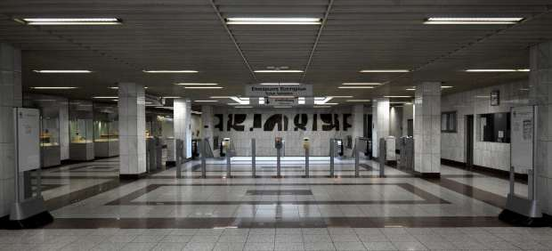
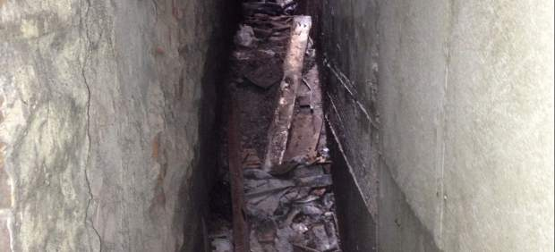
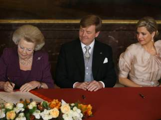
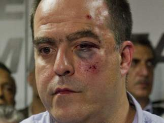
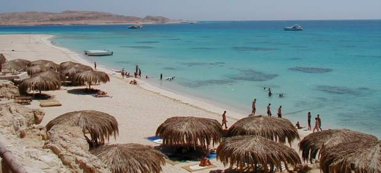
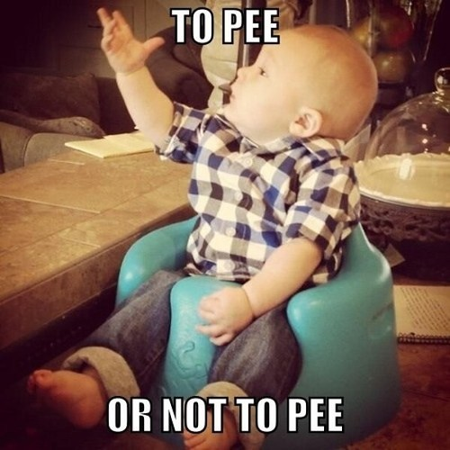

Grecia
Grecia vive su segunda huelga general de este año y pasa el Día del Trabajo a la próxima semana
La huelga tiene lugar tan solo tres días después de que el Parlamento aprobara las nuevas medidas de recorte impulsadas por el Gobierno y la troika. Este nuevo plan de ajuste, que ha sido requisito para obtener el próximo tramo del rescate financiero, contempla, el despido de 14.000 empleados públicos.
Portugal
Portugal recortará 4.700 millones de euros más entre 2014 y 2016
Para hacer sostenibles las finanzas del Estado y cumplir las metas de reducción del déficit comprometidas en su rescate financiero. Se suma a los 1.300 millones de euros de ajustes que debe concretar en 2013.
EEUU
Encuentran posibles restos humanos en el callejón donde apareció la pieza de un avión del 11-S
Una portavoz de la Oficina del Forense de Nueva York ha confirmado el hallazgo. Sin precisar más detalles, aseguró que "la operación de búsqueda continúa".
Países Bajos
Beatriz de Holanda abdica en su primogénito, Guillermo Alejandro, que ya es rey de los Países Bajos
La reina Beatriz ha cedido la corona a su hijo Guillermo, que se ha convertido a sus 46 años en el rey más joven de Europa.
Alemania
El Ministerio de Educación alemán tira a la basura 190.000€ en ordenadores porque tenían virus
Al parecer los equipos pertenecientes a un instituto de la localidad de Schweri presentaban tal nivel de proliferación de virus informáticos que no solo hacían inmanejables los ordenadores sino que resultaba prácticamente imposible proceder a una desinfección. O por puntualizar, podía llevarse a cabo pero a cambio de una importante cantidad. Se encargó a una empresa especializada un estudio y cifró el coste en 130.000€.
Venezuela
Al menos siete diputados heridos tras una pelea en la Asamblea Nacional de Venezuela
Su presidente se negó a dar el derecho de palabra a los opositores por no reconocer a Maduro como gobernante. Es la tercera vez que diputados oficialistas atacan a opositores en una sesión parlamentaria desde que se celebraron las elecciones presidenciales.
EEUU
Obama negocia con el Congreso para cerrar Guantánamo
Asegura que sigue creyendo en su cierre pero que depende del Congreso para ello."Guantánamo no es necesario para mantener a Estados Unidos a salvo, es ineficiente, caro y dificulta la cooperación", ha reconocido.
Túnez
Tercera cadena perpetua para el expresidente tunecino Ben Ali
El expresidente vive desde 2011 en Arabia Saudí tras la primavera árabe.Es la tercera vez que un tribunal militar le condena.
Egipto
Un hotel islamista en Egipto ofrece a sus clientes 'vacaciones sin violar la sharía'
El hotel recién inaugurado 4 Win cumple con los requisitos para que los musulmanes más conservadores puedan cumplir con la ley islámica.
Humor
